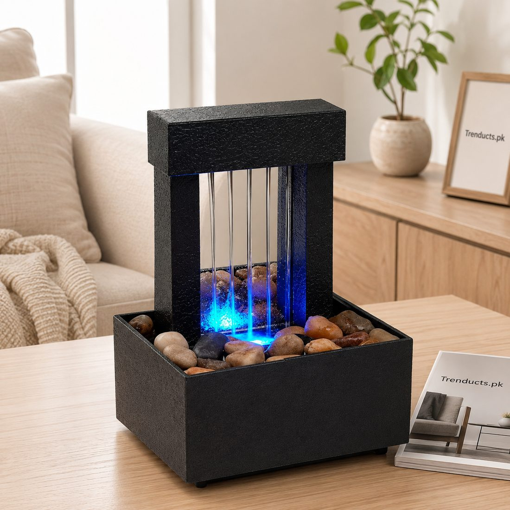
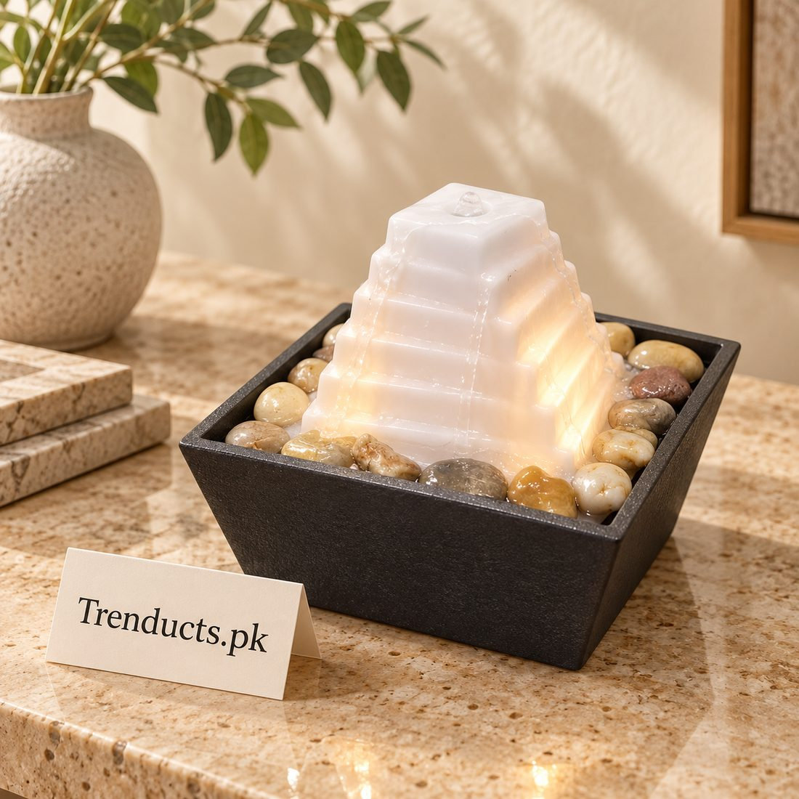

- Why the reception area matters
- The calming effect of water
- Choosing a tabletop fountain
- Placement and care
- Add plants and natural elements
- Lighting and seating
- Little extras that clients notice
- Final thoughts
Waiting is part of daily life in Pakistan. We wait at the doctor's clinic, the bank, the lawyer's office, the salon and the property dealer. Most waiting areas look the same: plastic chairs, a ticking clock, a television playing news too loudly and a receptionist answering the phone. People arrive stressed and become more anxious as they wait.
A few thoughtful touches can change that. A tabletop water fountain, a couple of plants, soft lighting and comfortable seating make a reception area feel calm and professional. This guide explains how small businesses can create a better first impression.
Why the reception area matters
The reception is the first thing a client or patient sees. A calm, clean space suggests a professional, caring business. In clinics, a relaxed atmosphere can actually reduce patient anxiety. In salons and boutiques, it sets the tone for a pleasant experience. For small offices in cities like Lahore, Karachi and Islamabad, competing for clients, these details matter.
The calming effect of water
The gentle sound of flowing water is soothing for most people, which is why fountains appear in hotels, spas and gardens across the world. Traditional Mughal architecture in Lahore used water features in courtyards for both cooling and calm. A small tabletop fountain brings a modern version of that idea indoors. Its soft trickle also masks background noise, such as conversations at the reception desk, giving clients some privacy.

Choosing a tabletop fountain
Tabletop fountains come in many designs:
- Tap or faucet designs that appear to float in the air, which are eye-catching conversation pieces
- Mirror fountains with LED lights, which suit modern offices
- Pyramid designs with river pebbles, which feel natural and grounded
- Rock and bamboo styles, which suit spas and wellness clinics
Choose a size that suits the reception desk or a side table without crowding it. Make sure it runs quietly and the pump is easy to clean. You can compare many designs among small decorative fountains for offices and homes before choosing one for your space.
Placement and care
Place the fountain on a stable surface away from electrical equipment and paperwork, and near a power socket so cables are not stretched across walkways. Use clean or distilled water to reduce mineral build-up, which is common with hard water in many Pakistani cities. Top up water every few days, as it evaporates, and clean the basin and pump every two weeks to prevent algae. Switch it off during load shedding to protect the pump if using a UPS.
Add plants and natural elements
Plants make a space feel alive and fresh. Snake plants, ZZ plants and peace lilies tolerate indoor conditions and low light. A few pots near the entrance and the waiting chairs soften hard surfaces. Natural materials, like wooden tables or a jute rug, add warmth.

Lighting and seating
Harsh tube lights make spaces feel clinical. Use warm white lighting, and add a table lamp if possible. Comfortable chairs with cushions, rather than hard plastic, make waiting more pleasant. Arrange seating so people are not facing each other directly, which feels awkward.
Little extras that clients notice
- A water dispenser or a jug with clean glasses
- A few magazines or a small bookshelf
- A charging point for phones
- A clear sign with Wi-Fi details if available
- A clean, fresh-smelling washroom
Final thoughts
Creating a calm reception area does not require a big budget. A tabletop fountain, some plants, warm lighting and comfortable seating turn a stressful wait into a more pleasant experience. For small businesses and clinics across Pakistan, that calm first impression can make clients more likely to return.